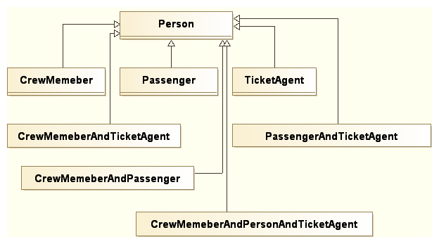
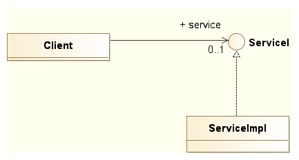
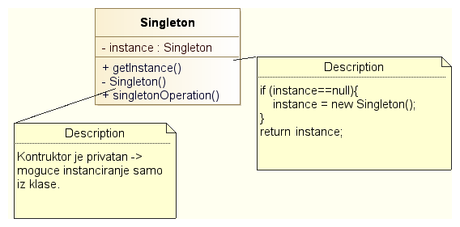

Softverski obrasci i komponente
Fundamentalni i kreacioni obrasci


Fakultet tehničkih nauka u Novom Sadu
Katedra za informatiku
Fundamentalni obrasci
- Osnovni obrasci koji se koriste za izgradnju složenijih obrazaca.
- Delegation
- Interface
- Abstract Superclass
- Interface and Abstract Class
- Immutable
- Marker Interface
- Proxy
Delegation
- Opšti način proširenja funkcionalnosti klase ili objekta.
- Koristi se u situacijama kada nasleđivanje nije dovoljno fleksibilno, posebno u situaciji kada programski jezik omogućava samo jednostruko nasleđivanje.
- Dinamičko proširenje pri instanciranju klase definisanjem delegata.
Primer problema
Primer rešenja
Struktura obrasca

Primer
interface I {
void f();
void g();
}
class A implements I {
public void f() { System.out.println("A: doing f()"); }
public void g() { System.out.println("A: doing g()"); }
}
class B implements I {
public void f() { System.out.println("B: doing f()"); }
public void g() { System.out.println("B: doing g()"); }
}
Primer (nastavak)
class C implements I {
// delegation
I i = new A();
public void f() { i.f(); }
public void g() { i.g(); }
}
// normal attributes
public void toA() { i = new A(); }
public void toB() { i = new B(); }
public class Main {
public static void main(String[] args) {
C c = new C();
c.f();
// output: A: doing f()
c.g();
// output: A: doing g()
c.toB();
c.f();
// output: B: doing f()
c.g();
// output: B: doing g()
}
}
Kada koristiti?
- Nasleđivanje je statička veza. Potrebno je da objekat menja klasu u vreme izvršavanja.
- Potrebno je simulirati višestruko nasleđivanje. Delegator može imati više delegata.
- Želimo da nasledimo određenu klasu ali ona nije pod našom kontrolom. Delegacija je u tom slučaju bezbednija jer nas štiti od nekompatibilnih promena nadklase.
Interface
- Želimo da učinimo klijenta nezavisnim od klasa koje obezbeđuju servis tako da možemo izmeniti klase bez uticaja na klijenta.
- Servisne klase već nasleđuju neke klase a višestruko nasleđivanje nije podržano.
Struktura obrasca
Primer

Šta dobijamo?
- Servisna klasa može biti zamenjena bez uticaja na klijenta.
- Servisna klasa može implementirati više interfejsa i nasleđivati proizvoljnu klasu.
Interface and Abstract Class
- Proširenje Interface obrasca.
- Želimo da klijenta učinimo nezavisnim od hijerarhije klasa koje implementiraju servis na takav način da možemo menjati klase koje implementiraju servis bez uticaja na klijenta.
- Istovremeno želimo da definišemo apstraktnu implementaciju servisa tako da konkretni servisi mogu da redefinišu/dopune baznu implementaciju.
Struktura obrasca

Primer

Šta dobijamo?
- Konkretan servis može biti baziran na apstraktnoj implementaciji ali i ne mora. Dovoljno je da implementira interfejs servisa.
- Servisna klasa može implementirati više interfejsa i može nasleđivati proizvoljnu klasu.
- Apstraktna klasa obezbeđuje bazičnu implementaciju čime se razvoj novih servisnih klasa ubrzava.
Kreacioni obrasci
- Apstrakcija i lokalizacija procesa instanciranja objekata.
- Čine sistem nezavisnim od načina kreiranja i kompozicije objekata.
Bazične osobine
Bazične osobine kreacionih obrazaca su sledeće:
- Enkapsuliraju znanje o konkretnim klasama koje sistem koristi.
- Skrivaju način na koji se vrši instaciranje klasa i kompozicija objekata.
Katalog kreacionih obrazaca
Prema [1] kreacioni obrasci su sledeći:
- Factory Method
- Abstract Factory
- Prototype
- Builder
- Singleton
Factory Method
- Želimo da odvojimo klijenta od konkretne implementacije putem Interfejsa.
- Želimo da klijent kreira objekte na takav način da "ne zna" koju konkretnu klasu instancira.
Struktura

Šta dobijamo?
- Instanciranje konkretnih objekata je lokalizovano. Programski kod nije jako spregnut sa tipom konkretnih instanci.
- Klasa može delegirati kreiranje konkretnih objekata koje koristi na svoje podklase čime se postiže veća fleksibilnost.
A šta gubimo?
- Relativno veliki broj klasa.
- Svaki novi Proizvod zahteva novog Kreatora.
Demonstracija obrasca Factory Method na primeru u Javi
Abstract Factory
- Proširenje Factory Method obrasca.
- Kreiranje familije objekata sličnih po funkciji koju vrše u aplikaciji pri čemu klijent (objekat koji ih koristi) "ne zna" konkrente klase objekata.
Struktura

Šta dobijamo?
- Instanciranje familije konkretnih objekata je lokalizovano.
- Programski kod nije jako spregnut sa tipom konkretnih instanci.
- Promena familije konkretnih instanci moguća je izmenom programskog koda na mestu gde se instancira konkretna fabrika objekata (najčešće jedna linija koda).
- U određenim slučajevima moguća je dinamička promena fabrike objekata (npr. Swing PLAF).
A šta gubimo?
- Relativno veliki broj klasa.
- Svaki novi Proizvod zahteva novu metodu u svim Kreatorima i svaka nova familija proizvoda zahteva novog konkretnog Kreatora i nove konkretne proizvode.
Prototype
- Kreiranje objekta kopiranjem već postojeće instance.
Struktura

Šta dobijamo?
- Eliminišemo potrebu za postojanjem kreator klasa i njenih naslednica pri korišćenju Factory Method dizajn šablona - smanjuje se broj potrebnih klasa.
- Ako je instanciranje objekata previše "skupo" sa stanovišta potrošnje procesorskog vremena i memorije, kloniranje već kreiranih objekata može dovesti do ubrzanja i smanjenja potrošnje memorije.
- Ukoliko nam trebaju instance objekata čije stanje se razlikuje od inicijalnog ali je slično već postojećim jednostavnije je kloniranje postojećeg, sličnog, objekta i izmena potrebnih atributa od kreiranja i pune inicijalizacije novog objekta.
Na šta treba obratiti pažnju?
- Kloniranje se najčešće realizuje tzv. "dubokim kopiranjem" (eng. deep copy).
- Javina clone operacija je realizovana kao "plitko kopiranje" (eng. shallow copy).
Demonstracija obrasca Prototype na primeru u Javi
Builder
- Konstrukcija složenih objekata podelom nadležnosti na onoga ko "zna" kako treba napraviti strukturu složenog objekta i onoga ko "zna" kako treba kreirati pojedinačne delove.
Struktura

Šta dobijamo?
- Razdvajamo konstrukciju složenog objekta (najčešće Composite) od njegove reprezentacije tako da isti postupak izgradnje može rezultovati različitim reprezentacijama.
Kada koristiti?
- Ako je potrebno učiniti algoritam za kreiranje složenih objekata nezavisnim od konkretnih delova koji sačinjavaju objekat.
- Ako proces konstrukcije mora obezbediti različite reprezentacije objekta koji se izgrađuje.
Singleton
- Potrebno je da postoji samo jedna instanca klase u sistemu. Na primer: logger, registar, jedinstvena konekcija ka bazi i sl.
- Jedinična instanca mora biti dostupna svim klijentima.
Struktura
Šta dobijamo?
- Kontrolisani pristup jedinstvenoj instanci.
- Nasleđivanje klase jedinstvene instance i omogućavanje rekonfiguracije sistema i u vreme izvršavanja (run-time).
- Ako je naknadno potrebno, može se obezbediti postojanje više od jedne instance. Na primer, Connection Pool.
Napomena
- Singleton se danas smatra anti-obrascem.
- Dva glavna razloga:
- Singleton je globalni objekat – globalne varijable loše utiču na kvalitet dizajna i na konkurentnost u kontekstu višenitnog programiranja.
- Singleton se teško mock-up-uje (klijentski kod je čvrsto spregnut sa Singleton objektom) pa je testiranje koda koji ga koristi veoma teško. Ovaj problem se može rešiti korišćenjem Dependency Injection obrasca.